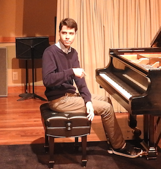

|

|
Rodrigo Castiel
email: rcrs2 (at) cin.ufpe.br - castielr (at) usc.edu
Computer Engineering undergraduate student at
Center for Informatics (CIn) , Recife, Brazil. I'm interested in Computer Graphics, Digital Image Processing and software development. Recently I've been working on real-time physically-based animation, real-time graphics with OpenGL 4.0, and nonlinear optimization problem modeling. I'm fluent in C/C++, MATLAB and Python; I can also do some webdesign (HTML5 + CSS3 + Javascript). I've been coding for 5+ years, since I taught myself the C language in high-school. Even though I have a strong experience in implementing advanced numerical methods in C++, I learned lots of different programming languages during my major, so I'm very open to study and practice even more. In my freetime, I usually work on some personal coding projects or play the piano. You are very welcome to visit me on: |